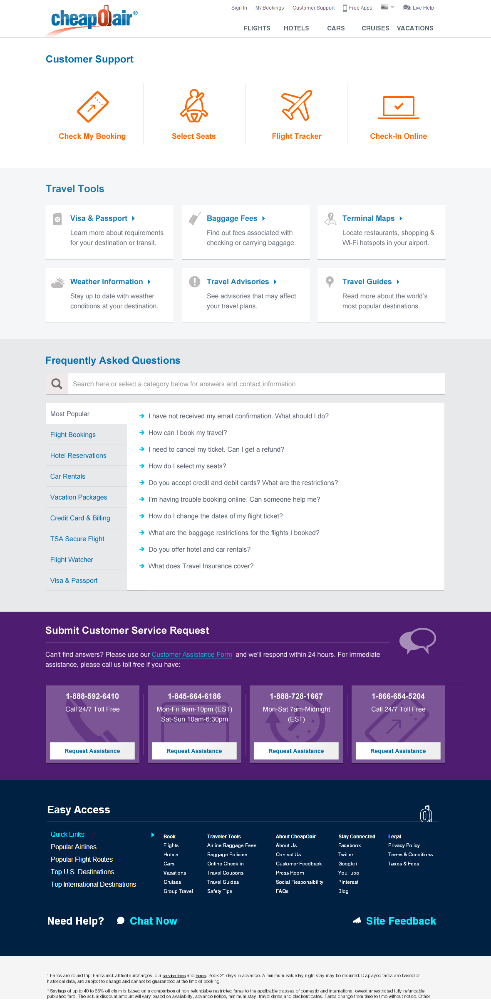
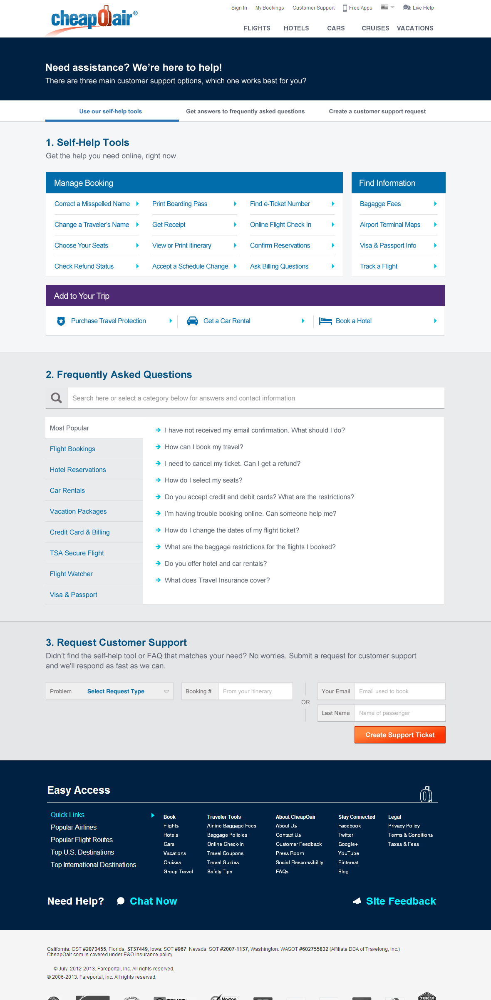
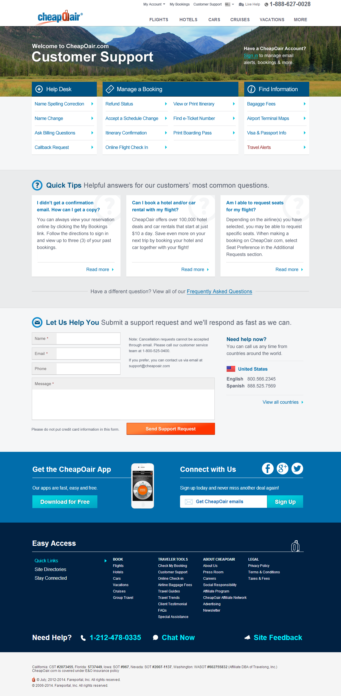
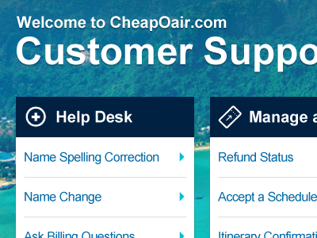
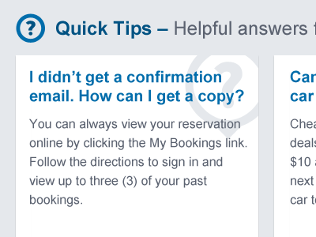
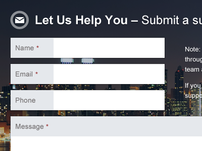
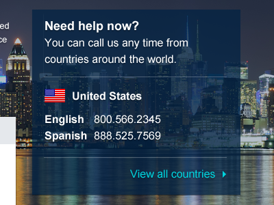

Project Goals
The CheapOair Customer Support page was in a state of constant flux. Long-neglected due to the company's emphasis on the role of its live call centers, I helped push to automate simple customer service requests and provide self-service tools to free up agents to sell more flights.
As a secondary goal, I wanted to push users to create accounts to not only better serve them, but to help create a lasting relationship.
Getting Input
I began by working with business analysts to gain insights customer complaints and feedback. I also spoke to many call center agents to get a sense of what would make the biggest impact within our technological constraints. This helped prioritize the information architecture of the redesign and allowed me to focus on balancing what matters most to both our customers and our support staff.
A Long and Winding Road
Since new tools are being added all the time (and with them: new teams, departments, and management), the page has seen more than its fair share of redesigns. As lead designer for this product, I've reigned in demands from each stakeholder over the years. Check out how it's evolved:



Bringing it all Together
The final design incorporated many impactful new functionalities with a visual design that tied it all together with the CheapOair brand.
Aside from visual design, I attempted to incorporate as much research and new features as possible. It leveraged learnings from existing data and testing results such as simpler price display, orange calls-to-action, and compact fare display. It also incorporated many new features that were on the planned development roadmap, such as the "Easy Pick" matrix and fixed footer.
The Nitty Gritty
Here's a quick rundown of the details that shaped this interface:
-

Self-Service Tools
Immediately, the user is presented with a list of self-service tools. Though many of these links lead to the same tool, they are listed individually to directly address the customers' specific problems.
-

Quick Tips
From our data, we created a list of Quick Tips that address the most common concerns customers have. The full FAQ section is just a click away and offers an enormous amount of easily searchable information.

Support Requests
If our Self-Service tools didn't solve the customer's problem, they can request support with this form. Its questions help clarify the problem and direct it to the right support team.

Contact Us
By default, we display only the contact information of the country the customer is viewing the page from. If necessary, they can view the full list too. It's a huge list.
User Profiles
A prominent call to action to sign in is displayed, as many of these self-service tools can be expedited when a customer accesses their user profile.
The Results
The introduction of automated self-service tools has considerably reduced non-revenue generating calls. Customer feedback has improved as well, and many of the most common complaints have been dramatically reduced.
Future plans for the page would introduce more complex automated tools, such as changing or cancelling an existing booking, adding a customer support forum, and integrating a support ticketing system.
What I Learned
Business needs and customer needs are not always in sync. Some of the top customer complaints could not be addressed in an efficient manner due time and development constraints for the project. As a product designer, it's essential to fight for the user, while also being pragmatic about what can be reasonably achieved.